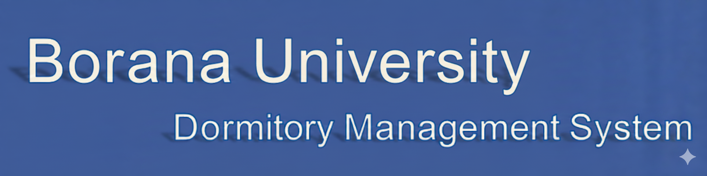
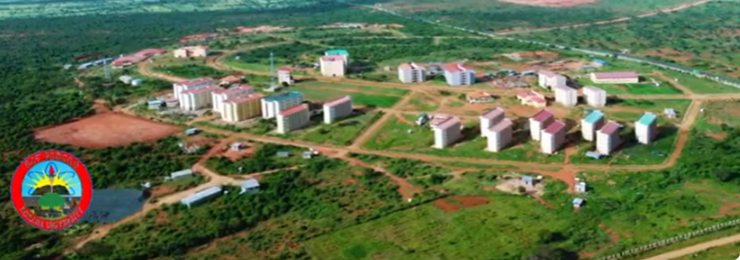
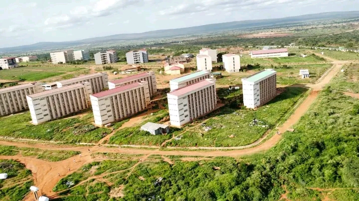

|
BORANA UNIVERSITY BORANA UNIVERSITY (BRU) is one of the thirteen new Universities which was established in the year 2009 E.C by the Ethiopian government (MOE).BRU is located in the Southern part of Ethiopia, in Oromia Region, Borana Zone, in Yabelo town which is 567 kms far from Addis Ababa to the South. The foundation of the University was laid down in febrary 2009 E.C. BRU started the teaching, learning Process on 2013 E.C (2022 G.C) with enrollment above 1000 students in the faculty of education with two streams, namely Businesses Education and natural science. Currently the University runs over 18 departments in first degree and 5 postgraduate studies by the total above 1500 students. In addition to the academic service the university provides dining, health care, dormitory, and other services for the students. Announcements Dear Regular Students of Borana University You can view your dormitory information by clicking Here |